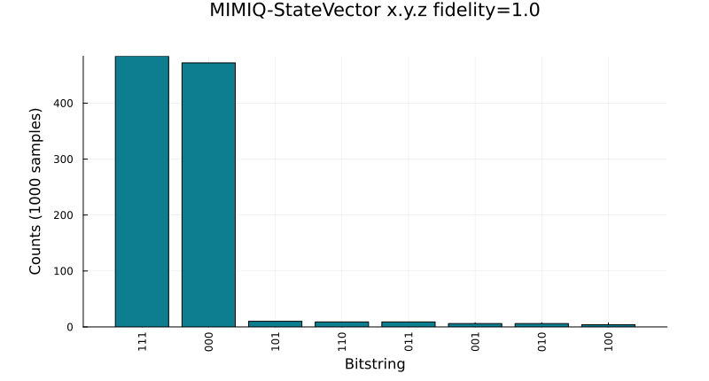
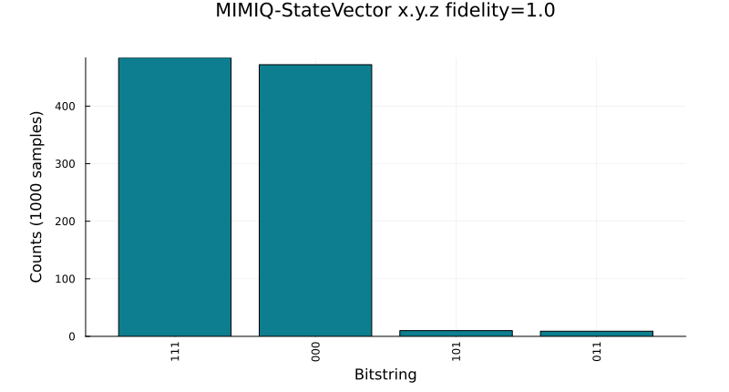

Analyzing results
Every circuit executed on MIMIQ produces a QCSResults object. You get one from getresult, a vector of them from getresults (see Cloud Execution), or by loading a results file with loadproto. This page explains what it contains and how to turn it into counts, probabilities and plots.
The examples build a QCSResults by hand, so that they run without a connection to MIMIQ. A result returned by the service works in exactly the same way.
A results object
QCSResults can be constructed from its fields, in this order: simulator name, simulator version, fidelities, average gate errors, classical register samples, Z-register contents, amplitudes and timings.
using MimiqCircuits
using Random
# Fake the output of a 3-qubit GHZ circuit measured 1000 times: the two
# outcomes 000 and 111 appear with equal probability, and a few samples have
# one bit flipped, as a noisy device would produce.
rng = MersenneTwister(42)
cstates = map(1:1000) do _
bits = fill(rand(rng, Bool), 3)
if rand(rng) < 0.05
k = rand(rng, 1:3)
bits[k] = !bits[k]
end
BitString(bits)
end
res = QCSResults(
"MIMIQ-StateVector", # simulator
"x.y.z", # simulator version
[1.0], # one fidelity per execution
[0.0], # one gate error per execution
cstates, # one BitString per sample
[ComplexF64[0.9]], # Z-register, one vector per execution
Dict(bs"000" => 1 / sqrt(2) + 0im), # requested amplitudes
Dict("total" => 0.012, "apply" => 0.004, "sample" => 0.006),
)| QCSResults | |
| Simulator | |
| MIMIQ-StateVector x.y.z | |
| Timings | |
| apply time | 4.0ms |
| sample time | 6.0ms |
| total time | 12.0ms |
| Fidelity estimate | |
| Single run value | 1.0 |
| Average multiqubit error estimate | |
| Single run value | 0.0 |
| Statistics | |
| Number of executions | 1 |
| Number of samples | 1000 |
| Number of amplitudes | 1 |
| creg (most sampled) | |
| bs"111" | 484 |
| bs"000" | 472 |
| bs"101" | 10 |
| bs"110" | 9 |
| bs"011" | 9 |
| bs"001" | 6 |
| bs"010" | 6 |
| bs"100" | 4 |
| zreg (most sampled) | |
| 0.9 | 1 |
| Amplitudes | |
| bs"000" | 0.7071067811865475 + 0.0im |
Printing a result shows a summary: simulator, timings, fidelity, the five most frequent samples and the number of executions, amplitudes and samples.
Fields
| Field | Type | Content |
|---|---|---|
simulator | String | name of the simulator that ran the circuit |
version | String | version of that simulator |
fidelities | Vector{Float64} | fidelity estimate of each execution, see Fidelity and Error estimates |
avggateerrors | Vector{Float64} | average multi-qubit gate error of each execution |
cstates | Vector{BitString} | the classical register of each sample |
zstates | Vector{Vector{ComplexF64}} | the Z-register of each execution |
amplitudes | Dict{BitString,ComplexF64} | amplitudes requested with the bitstrings keyword of submit |
timings | Dict{String,Float64} | time in seconds spent in each stage, under "total" the whole run |
How many entries fidelities, avggateerrors and zstates hold depends on how the circuit was sampled (see Understanding sampling). A circuit without mid-circuit measurements or other non-unitary operations is executed once and sampled many times, so these vectors have one entry. A circuit that needs one execution per sample has one entry per sample.
# Number of samples, and the first few of them.
length(res.cstates), res.cstates[1:3](1000, BitString[bs"000", bs"000", bs"111"])# Lowest fidelity over all executions.
minimum(res.fidelities)1.0# Total run time in seconds.
res.timings["total"]0.012Counts and probabilities
histsamples counts how many times each classical-register value was sampled and returns a Dict{BitString,Int}:
counts = histsamples(res)Dict{BitString, Int64} with 8 entries:
bs"110" => 9
bs"100" => 4
bs"000" => 472
bs"011" => 9
bs"111" => 484
bs"001" => 6
bs"010" => 6
bs"101" => 10Sort it to find the most frequent outcomes, and divide by the number of samples to estimate probabilities:
nsamples = length(res.cstates)
probs = Dict(b => n / nsamples for (b, n) in counts)
# Outcomes from most to least likely.
sort(collect(probs); by=last, rev=true)8-element Vector{Pair{BitString, Float64}}:
bs"111" => 0.484
bs"000" => 0.472
bs"101" => 0.01
bs"011" => 0.009
bs"110" => 0.009
bs"001" => 0.006
bs"010" => 0.006
bs"100" => 0.004The outcomes are BitStrings, so the bitstring helpers apply to them. Bit i of the BitString is the classical bit i of the circuit:
b = bs"011"
b[1], nonzeros(b), to01(b), bitstring_to_integer(b)(false, [2, 3], "011", 6)bitstring_to_integer reads bit 1 as the least significant bit.
Estimates of observables follow directly from the samples. For example, the expectation value of $Z_1 Z_2$ is the average of $(-1)^{b_1 + b_2}$:
zz = sum(s -> (-1)^(s[1] + s[2]), res.cstates) / nsamples0.942Z-register and amplitudes
Operations such as ExpectationValue, Amplitude or VonNeumannEntropy write their output into the Z-register (see Statistical Operations). Each element of zstates is the content of the Z-register at the end of one execution, indexed like the zvars of the circuit:
# Value written to Z-register 1 in the first (here the only) execution.
res.zstates[1][1]0.9 + 0.0imWhen there is one execution per sample, average over them to get the estimate:
sum(z -> z[1], res.zstates) / length(res.zstates)0.9 + 0.0imAmplitudes requested through the bitstrings keyword of submit are stored in amplitudes, keyed by bitstring:
abs2(res.amplitudes[bs"000"])0.4999999999999999Plotting
A QCSResults can be plotted directly with Plots. The plot is a bar chart of the most frequent outcomes.
using Plots
plot(res)GKS: cannot open display - headless operation mode active
The keyword max_outcomes (default 15) sets how many outcomes are shown, and endianess (:big by default, or :little) sets the order in which the bits of each outcome are written on the axis.
plot(res; max_outcomes=4, endianess=:little)
Saving and loading
Results are saved in the protobuf format with saveproto and read back with loadproto. This is also the format of the result files you can download from the MIMIQ web interface.
fname = joinpath(mktempdir(), "results.pb")
saveproto(fname, res)
loaded = loadproto(fname, QCSResults)
histsamples(loaded) == histsamples(res)truesaveresults and loadresults do the same with shorter calls: saveresults(fname, res) and loadresults(fname).
saveproto writes one result per file, so save each element of the vector returned by getresults separately.